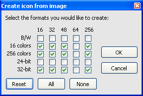

Icons are somewhat different from other images. They are usually drawn in multiple sizes and almost always have transparent pixels. If you have an existing graphic in e.g. BMP format, you can easily convert it to an icon using Greenfish Icon Editor. First of all, you should add transparency to the image. Then you should create some pages of different scale. One way to do it simply is the following:

If you need to convert lots of images to icons or to another image format, use the batch conversion feature.